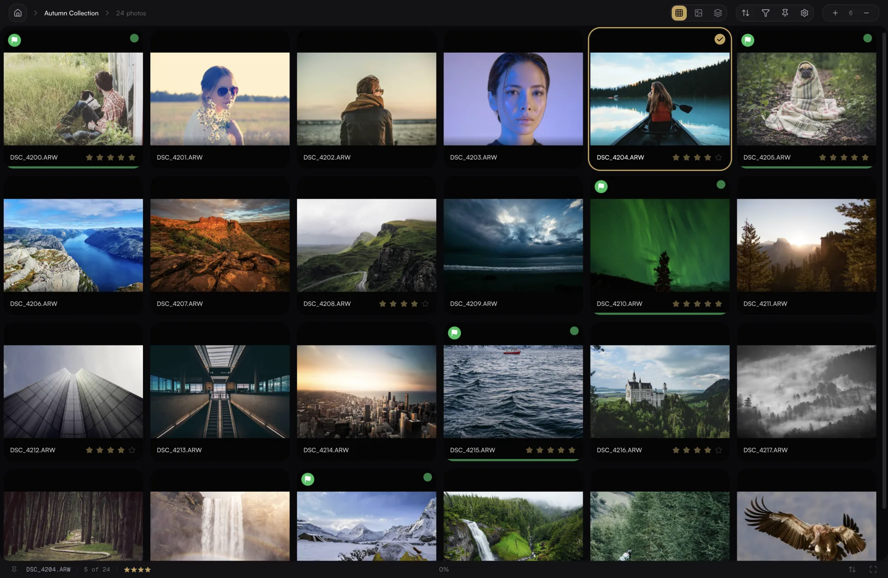
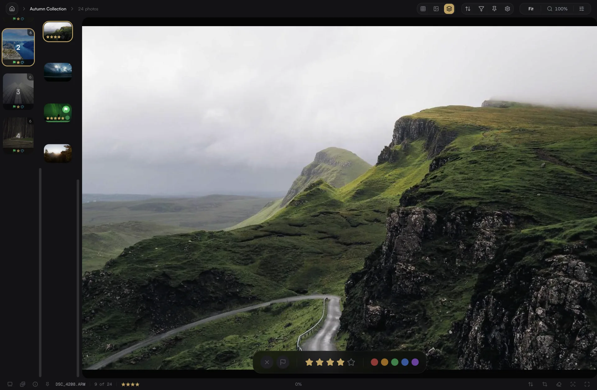
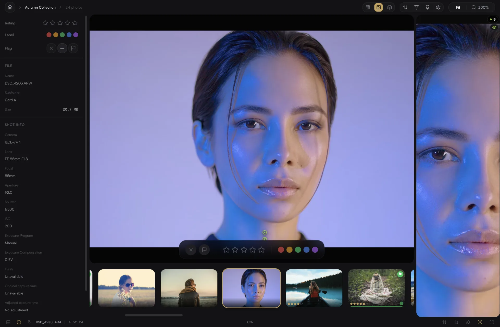
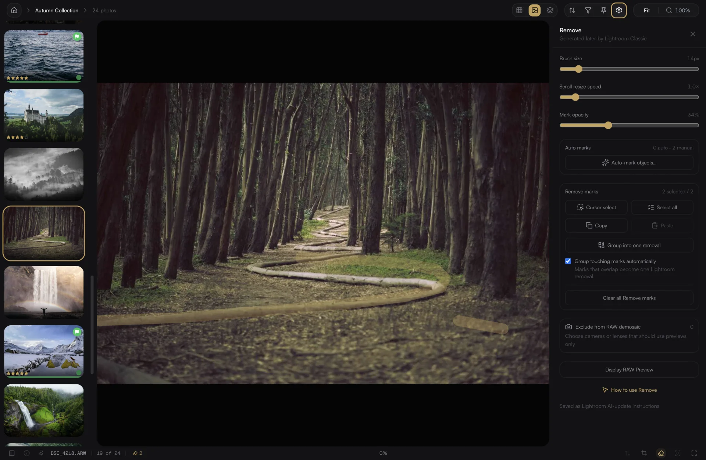
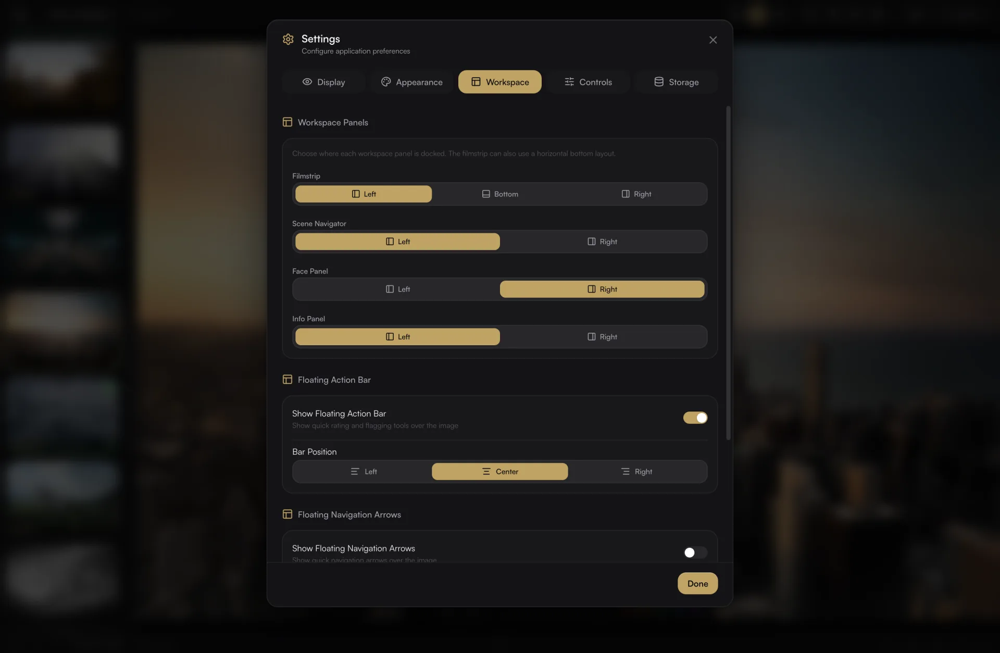

CullThing
A photo culling app for photographers who finish in Lightroom Classic.
Go through a shoot scene by scene, check faces and focus, and rate and flag from the keyboard. Mark crops and cleanups as you go. Everything reaches Lightroom as XMP.
Mac: Apple Silicon, macOS 13.4 or later · Windows: Intel/AMD x64
Test build, not signed yet, so both systems warn on first launch.
How to open it
What's new in 0.9.12
- Run first. Put selected photos ahead of a running auto-mark queue.
- EditThing. Fixed Lightroom save errors with “Always use camera profile”.
- Remote Access. The computer stays awake while a phone is loading photos, and no longer while a tab sits idle.
- Fixed a possible crash in a URL-handling library.

What it does
Sort the shoot by scene
CullThing groups the shoot into scenes. Work through one moment at a time and keep the best frames of each.

Check faces, eyes and focus
The face panel shows faces up close with a focus score, and Analyze Eyes adds eye status. Camera, lens and exposure sit in the info panel.

Mark distractions while you cull
Brush over a stray cable or a sign, or let auto-mark find wires, exit signs and background cars. The marks are saved to XMP, and Lightroom Classic does the removal.

Frame it before the handoff
Crops and angles are saved to XMP; the original file isn't touched.

Crop
Aspect presets, a locked ratio and a composition grid.

Straighten
An automatic angle, or set the level yourself.

Generative Expand
Prepares a DNG copy for Lightroom to fill in.
EditThing: a first edit in your style
Train a profile on photos you've already edited, or start from a preset and nine questions. Try it on a few photos, correct it in Lightroom, then apply it to the shoot. It runs on your computer.

Set up the screen your way
Filmstrip on the left, right or bottom; panels on either side. Or hide everything but the photo.

Card Manager
Copy memory cards to one or more destinations.
Cull from your phone
Turn on Remote Access and open the project in a phone or tablet browser on the same network.
Lightroom reads it all
Ratings, labels, flags, crops and marks go into XMP sidecars.
Updates
Choose Check for Updates… in the app menu.
Install
Mac
Paste this into Terminal. It checks the download, installs CullThing in Applications and opens it.
curl -fsSL https://raw.githubusercontent.com/andrei930/cullthing-releases/main/install-macos.sh | /bin/bash
Or use the .dmg. The build isn't notarized yet, so macOS blocks the first launch: open System Settings → Privacy & Security and choose Open Anyway.
Windows
Run the installer. It installs for your account only.
The build isn't signed yet, so SmartScreen may warn you: choose More info, then Run anyway.
EditThing also needs Adobe DNG Converter and downloads its models on first use.